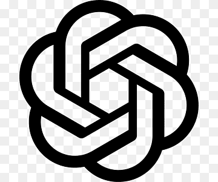

Sotto il Cofano
degli LLM
Cosa succede davvero quando premi Invio.
Dal neurone del 1943 al token generato un istante fa.
Cos'è il Machine Learning?
Tre grandi branche, distinte da come arriva il segnale di apprendimento:
Apprendimento supervisionato
Segnale: la risposta giusta è già nota, per ogni esempio.
Es. filtro spam, previsione prezzi.Apprendimento non supervisionato
Segnale: nessuna etichetta, scopre da sé struttura e gruppi.
Es. clustering clienti, riduzione dimensionale.Apprendimento per rinforzo
Segnale: ricompensa o penalità, imparando per tentativi.
Es. giochi, robotica, RLHF degli LLM.Gerarchia utile: gli LLM sono Deep Learning → dentro il Machine Learning → dentro l'Intelligenza Artificiale.
Cos'è una rete neurale?
Imparare significa regolare i pesi finché l'output non è corretto.
83 anni in una slide
L'idea non è nuova: dal primo neurone matematico al Transformer, fino agli LLM di oggi. Ogni passo risolve un limite del precedente.
Neurone MCP
McCulloch & Pitts: somma pesata + soglia → 0/1. Il primo neurone matematico.
Perceptrone
Rosenblatt: i pesi si auto-correggono sugli errori. Nasce l'apprendimento.
SVM
Modelli "shallow": separano lo spazio vettoriale con un iperpiano.
Deep Learning · CNN
Reti profonde + GPU: la svolta sulle immagini (filtri convoluzionali).
RNN / LSTM
Per il testo: lette parola per parola. Ma lente e con memoria corta.
Transformer
Self-attention: tutto in parallelo. È qui che nascono gli LLM. →
degli LLM

OpenAI GPT-5 · GPT-4o parametri non divulgati Anthropic
Opus 4.8 · Sonnet 5
parametri non divulgati
Anthropic
Opus 4.8 · Sonnet 5
parametri non divulgati
 Meta
Llama 4 · 3.1
fino a 405B · pesi aperti
Meta
Llama 4 · 3.1
fino a 405B · pesi aperti
 DeepSeek
V4 · R1
fino a 1.6T · 32B attivi · pesi aperti
DeepSeek
V4 · R1
fino a 1.6T · 32B attivi · pesi aperti
Il punto di svolta:
la Self-Attention
Il Transformer (2017) sostituisce l'elaborazione ricorrente con la self-attention: per ogni token calcola quanto contano gli altri token della sequenza.
Cosa succede quando mando una richiesta?
Le 6 fasi
System Prompt
contesto base iniettato
RAG
recupero documenti (eventuale)
Tokenizzazione
testo → numeri
Self-Attention
i token dialogano
MLP
ogni token da solo
Unembedding + Softmax
si sceglie il token
Le fasi 1–5 elaborano il prompt "in un colpo"; la 6 sceglie il token e si ripete per ogni parola generata.
1 Iniezione del System Prompt
@anthropic-ai/claude-code v2.1.88 ha spedito per errore una source-map: ~512.000 righe finite su GitHub in poche ore.2 Dentro il RAG: come funziona
3 Da testo a vettori: Tokenizer + Embedding
Di OpenAI il tokenizer è pubblico (tiktoken: cl100k, o200k); i valori della matrice no. Sono pubblici per i modelli aperti — es. GPT-2: 50.257 × 768.
4 Self-Attention: chi guarda chi
pesi:
5 MLP: Multi-Layer Perceptron
6 Unembedding + Softmax: si sceglie il token
Q&A
Grazie per l'attenzione.
Lo spazio è vostro.